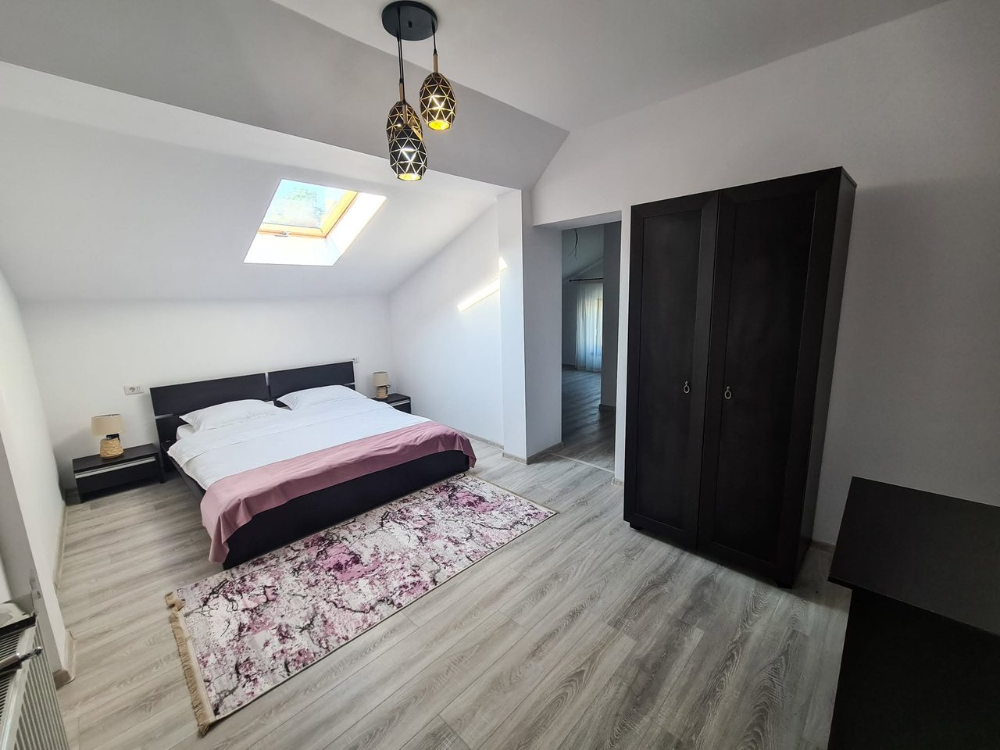

01 — 04
Family suite
4 guests · 1 double + 2 single · own bathroom
Two rooms with one door between them: a double bed for the parents, two single beds for the children, and a bathroom the four of you will not have to queue for.
from350lei/ night
one room of this type